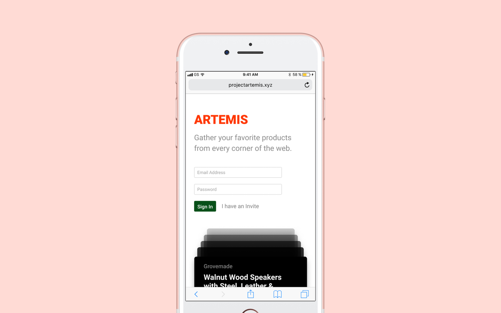
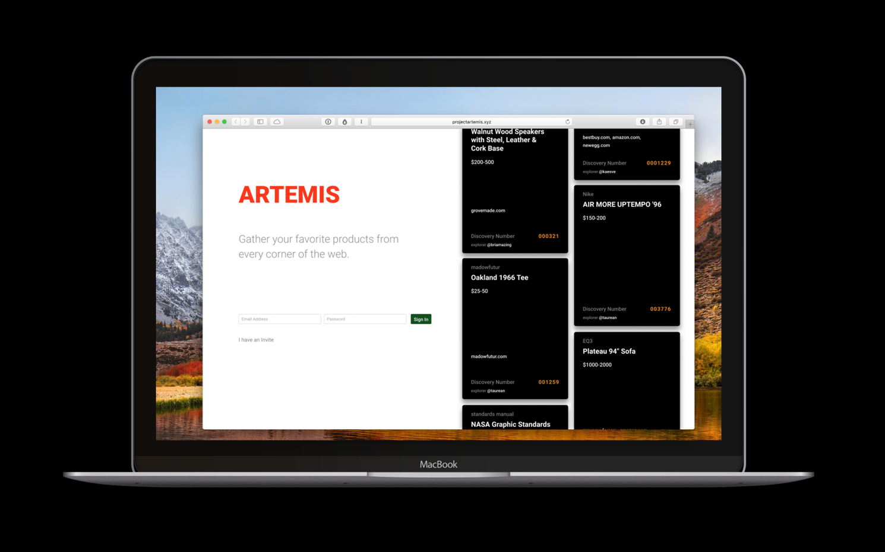

There are many products we buy for their utility, but the things we really care about are the things that reflect on who we are. The core idea behind Artemis was to create a platform that could capitalize on our affinity for the things we choose to collect in our lives. Artemis is a web application published under Voyager currently in beta that explores that relationship. As we approach an official release Artemis will undergo an rebrand exercise under a new name before we launch it to the public (The current frontrunner is cherrypicked.io).

